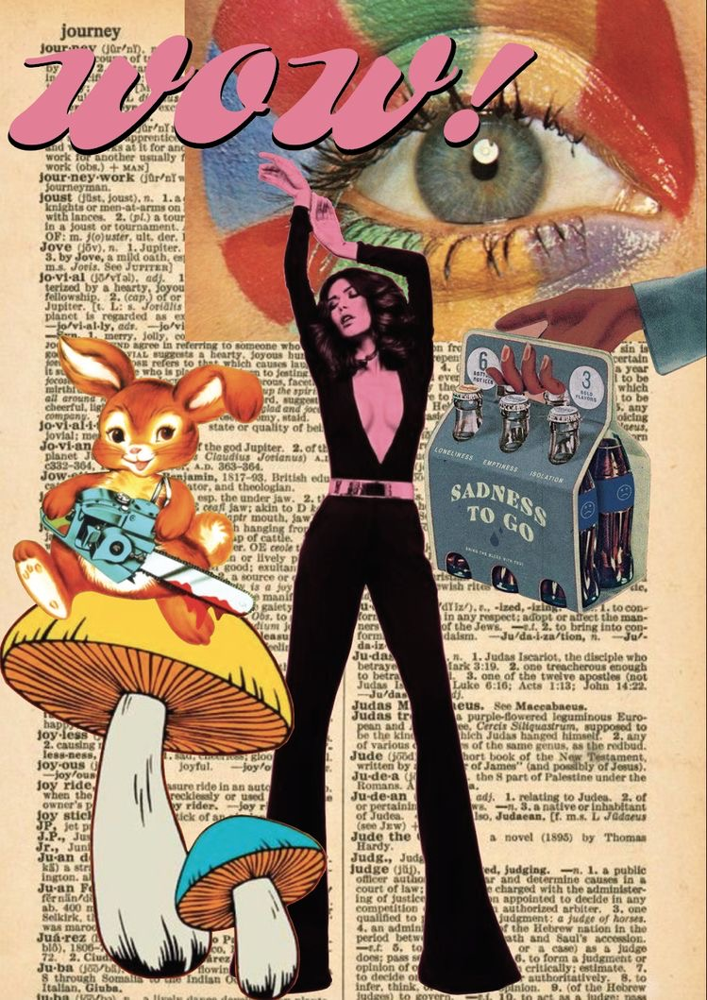
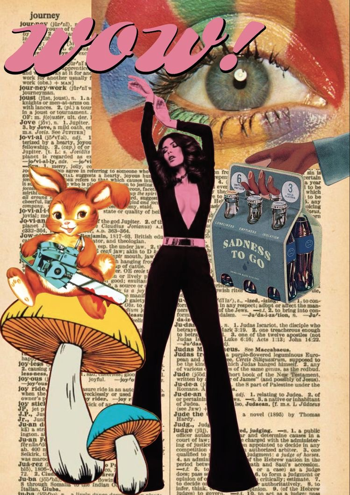

Maggie Nowak
Maggie Nowak is a college student majoring in Journalism + Design at Eugene Lang College of Liberal Arts. While the curriculum teaches design skills, including how to use certain applications such as those from the Adobe Suite, the majority of the time these skills were used for journalistic work. Nowak found an interest in exploring the more artistic side to the design world she was given an in to, as we can see in the following illustrations.
 
